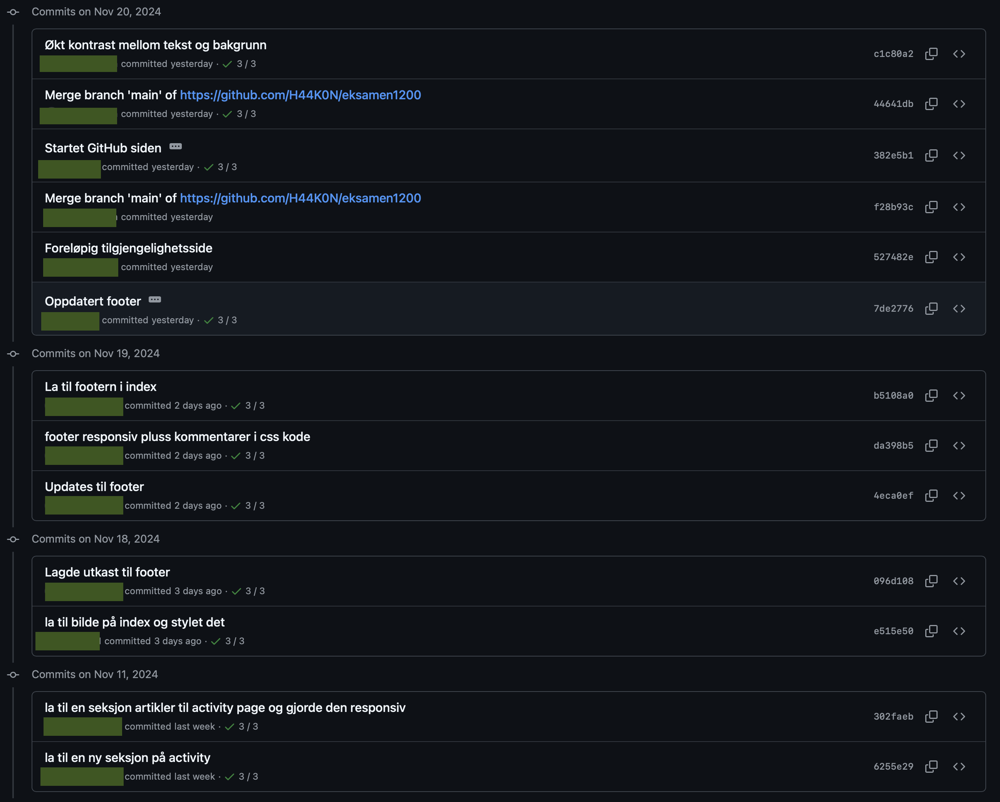
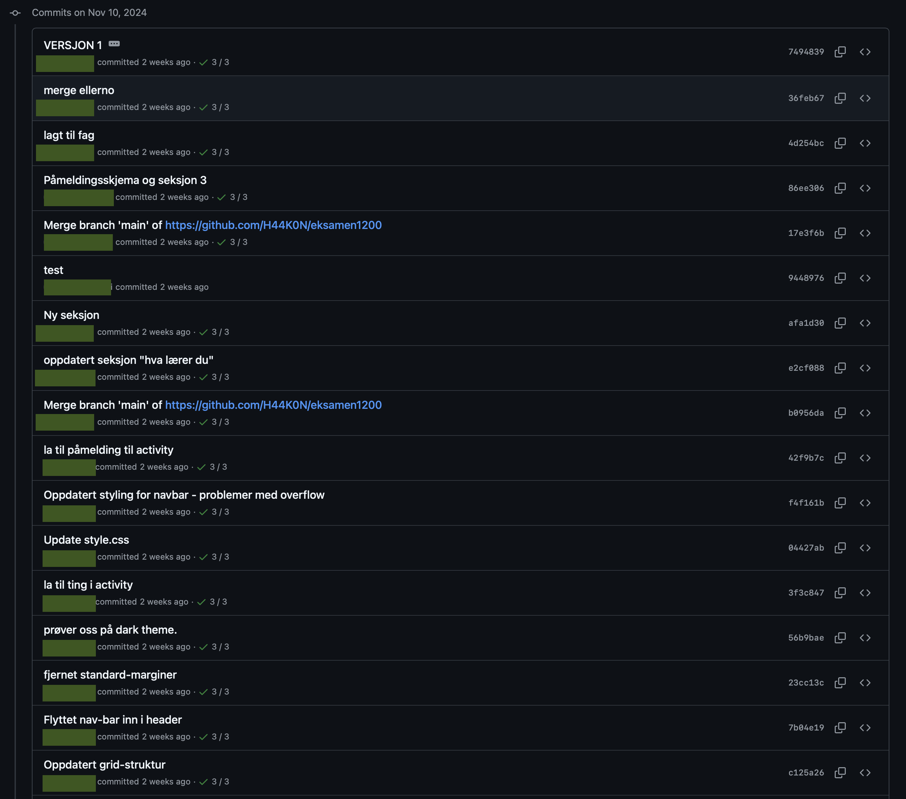
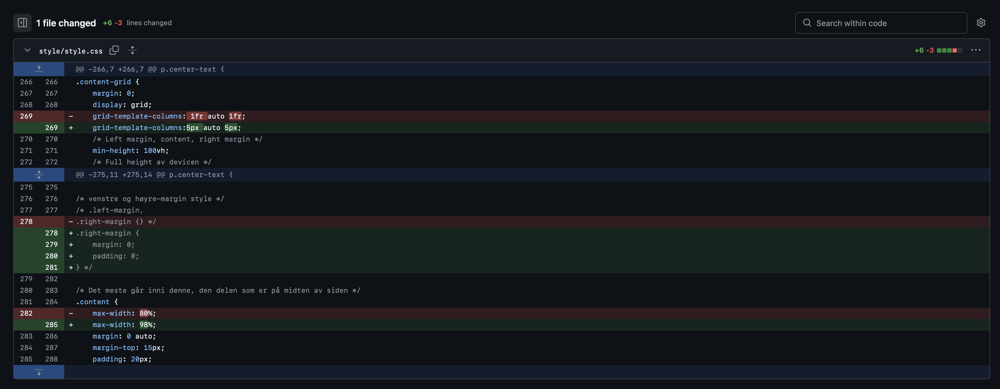

GitHub Aktivitet
På denne siden kan du få innsikt i gruppas erfaringer med GitHub, samt se arbeidet dokumentert med skjermbilder av Commits History og Commit Changes
Oppsett
Tekst om oppsett
Samarbeid
Tekst om samarbeidet
Skjermbilder
  
Tekst i midten
Hvorfor klatring er bra for deg
Klatring er en treningsform som styrker både kropp og sinn. Det utfordrer musklene i overkropp, kjerne og grepsstyrke, samtidig som det krever mental fokus og problemløsning. Dette gjør klatring til en aktivitet som gir både fysisk styrke og mental skarphet.
I tillegg gir klatring mestringsfølelse og bygger selvtillit, noe som kan ha positive
effekter på mental helse. Som en sosial sport kan den også utføres sammen med venner,
noe som skaper fellesskap og tilhørighet.
Les mer hvorfor klatring er bra for deg her